개발노트
ROGUELIKE RPG · 2025.04 — 2025.07 · 게임 제작 총괄 / PM
Project Darknight
방과 복도가 이어진 던전을 탐험하면 다음 청크가 열립니다. 던전이 커질 때 가장 까다로웠던 일은 새 지형을 만드는 순간에도 이동을 매끄럽게 유지하는 것이었습니다.
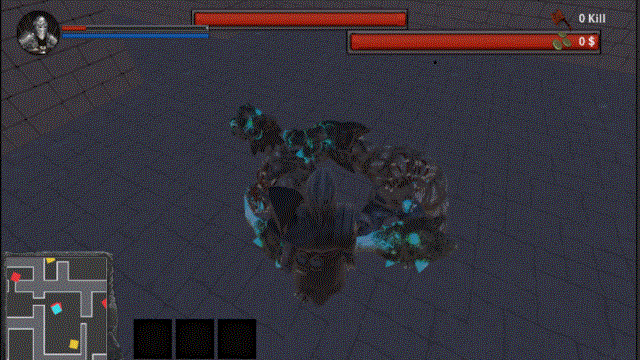
담당 작업
BSP 알고리즘 기반의 방·복도 절차적 생성
청크 스트리밍과 메쉬 컴바인을 이용한 렌더링 최적화
UniTask 기반 Dynamic NavMesh 갱신
상태 패턴과 Behaviour Tree를 활용한 캐릭터 AI
구현 과정
타일맵 정의
청크 너비와 높이로 TileType 2차원 배열을 만들고, 기본값은 Wall, 생성된 방과 복도는 Floor로 기록했습니다.
BSP 재귀 분할
공간을 Left/Right 노드로 나누되 분할선을 전체 길이의 0.3~0.8 사이에서 정했습니다. 최소 방 크기 조건으로 지나치게 작은 공간을 방지했습니다.

방과 복도 연결
리프 노드에 크기가 다른 방을 배치하고 부모 노드를 역순회했습니다. 양쪽 자식 방의 중심을 ㄱ·ㄴ자 경로로 연결해 모든 방의 도달 가능성을 보장했습니다.
런타임 청크 완성
사방 이웃의 연결 상태를 검사해 가장 얇은 벽을 찾고 RaycastAll로 통로를 열었습니다. 연결 완료 후 메시 결합, NavMesh 갱신, 풀 오브젝트 배치를 순차 실행했습니다.

개발 중 해결한 문제
배치와 활성 오브젝트가 계속 증가
청크 좌표를 키로 딕셔너리화하고 플레이어 시야 거리 안의 청크만 Dirty Flag로 활성화했습니다. 정적 오브젝트와 커스텀 셰이더가 많은 구조라 매 프레임 오버헤드가 있는 GPU Instancing보다 생성 시 한 번 비용을 지불하는 Mesh Combine을 선택했습니다.

던전 확장 순간 프레임 드롭
Mesh Combine, NavMesh 데이터 수집, 풀 보충이 동시에 실행되는 것이 원인이었습니다. 무거운 작업을 단계별 함수로 분해하고 Coroutine과 UniTask로 프레임에 분산했으며, 풀 부족분은 프레임당 하나만 생성하도록 제한했습니다.
NavMesh 갱신 때 전체 계층 탐색
기본 수집 방식은 청크가 늘수록 탐색 비용이 커졌습니다. 각 청크가 자신의 NavMeshModifier 목록을 미리 보관하게 하고 갱신 범위의 데이터만 수동 조합해 UpdateNavMesh에 전달했습니다.
절차적 맵 생성 구현 (BSP 알고리즘)
기능 기획 배경
무한 던전을 만들기 위한 절차적 맵 생성 알고리즘이 필요
BSP, Perlin Noise, Cellular Automata 등의 알고리즘 후보들이 존재
무한 던전의 다음 특성들을 고려
- 블럭을 단위로 만든 타일맵에 따른 맵을 구현하고자 함
- 방과 복도로 이루어진 던전이 필요
- 방이 허용 가능한 범위 내에서 불규칙적인 규모를 가지길 원함
- 각 던전 청크를 관리하기 용이해야 함
BinarySpacePartitioning(BSP)가 다음 기대효과들이 있다고 판단하여 선택
- 정해진 규모만큼만 청크를 만들기에 나중에 구현할 청크맵 관리 용이
- 방 크기의 제약 및 랜덤성 부여를 구현하기 용이
- 각 방을 재귀적으로 생성하기에, 모든 방을 연결할 복도 구현도 간편하며 폐쇄적인 방이 생기는 것을 방지하기에 용이
구현방식
- 생성할 방의 정보를 저장할 타일맵 정의
미리 전체 구조의 너비, 높이를 받아서 TileType에 대한 2차원 배열 생성
- 만들어진 방은 TileType.Floor로 채워질 예정
- 방 관련 데이터가 없으면 TileType.Wall 로 채워질 예정

- 정의된 타일맵에 따라 BSP기반의 방생성 로직 구현
- 정해진 청크 크기만큼의 공간을 재귀적으로 반씩 분리하여 Left,RIght로 저장
- Left,Right로 나눌 때의 기준선은 전체 크기의 (0.3~0.8) 사이의 지점으로 랜덤 설정하여 각 방의 규모에 랜덤성 부여
- 나뉜 방은 최소 크기까지만 분리되도록 조건을 설정하여 비정상적인 방의 크기가 생성되는 것을 방지
- 생성된 방을 연결할 복도 생성 로직 구현
- 모든 방이 생성되면, 저장한 Left,Right를 다시 재귀적으로 순회
- 각 방의 중심을 ㄱ,ㄴ의 형태로 이어지도록 경로를 생성
- 생성된 경로에 해당하는 타일맵을 TileType.Floor로 수정
- 각 방은 Left,Right의 방을 가지고 있기에, 재귀적으로 순회하면서 복도를 생성하면, 결과적으로 모든 방에 복도를 연결할 수 있어서 폐쇄된 방이 생기지 않음
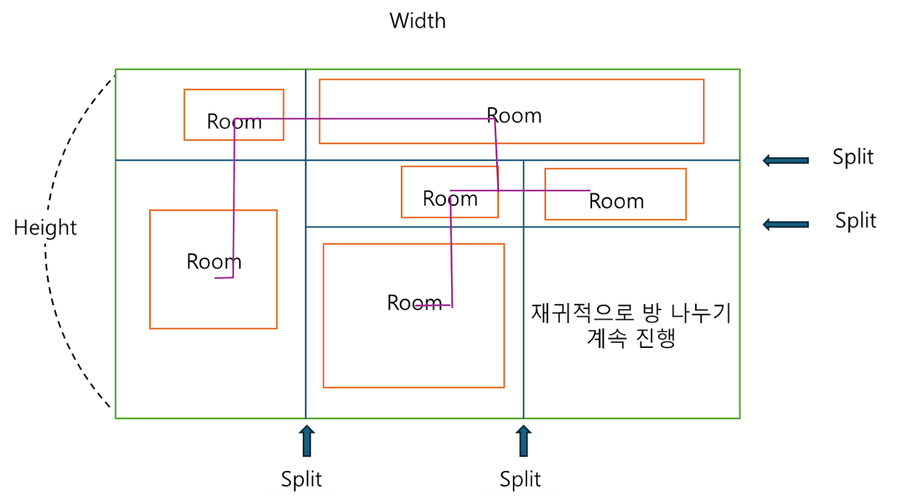
- 모든 과정을 거친 결과물
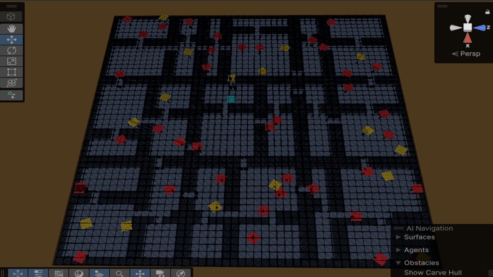
구현 성과
- Binary Space Partitioning에 대한 이해를 통해 절차적 맵 생성을 구현
- 방 크기에 대한 일정 범위의 규모에서 랜덤성을 부여하여, 다양한 방을 구현
- 나눠진 공간에 대한, 자식 노드를 통해, 복도를 생성하여 폐쇄적인 방 생성 방지
청크맵 관리 및 최적화 (메쉬 컴바인, Dirty Flag)
기능 기획 배경
절차적 맵 생성으로 만들어진 청크들을 연결하고 최적화가 필요
- 생성된 청크들을 서로 연결할 통로 로직 제작
- 최대한 드로우콜 및 활성화된 오브젝트 개수를 감소시키는 방안 필요
⇒ 오브젝트 풀링, 메쉬 컴바인, Dirty Flag 등의 여러 최적화 방안을 적용
구현 방식
- 생성된 청크들을 서로 연결할 통로 로직 제작
- 모든 청크를 연결하기 위해 상하좌우 연결여부 변수 정의
- 청크가 로드 될 때마다, 사 방향 청크들 연결여부 검사
- 연결되지 않은 청크끼리 붙어있는 면을 고려하여 가장 얇은 벽을 감지
- 얇은 벽을 뚫을 때, RayCastAll을 통해, 뚫는 방향의 모든 벽을 없애는 방식으로 구현
- 드로우콜 및 오브젝트 관리를 통한 최적화
- 메쉬 컴바인
- 드로우콜을 줄이기 위해, 청크 생성 및 4방향의 주위 청크와 통로 연결이 완료되면, 메쉬를 합쳐 단일 메쉬로 만들어 드로우콜 배치를 줄이는 방안 구현
- 메쉬 컴바인의 경우, 무거운 연산을 하기에, 프레임 분산을 통해 로직이 처리되도록 코루틴을 구현
- GPU Instancing 대신 메쉬 컴바인을 통해 드로우콜 관리한 이유
- 청크 내 컴바인 대상이 전부 정적인 오브젝트
- 지속적으로 청크맵들이 로드되어 렌더링되는 상황에서 특징 분석
but, 컴바인 이후, CPU 오버헤드는 하나 | 하나의 인스턴스 내에서 하나의 메쉬 데이터 처리 | 컴바인 된 오브젝트는 개별적인 오브젝트 동작 X |
쉐이더 및 URP의 추가적인 설정에 따라 GPU Instacing 조건이 맞지 않으면 배치 감소 X |
커스텀 쉐이더가 적용된 에셋을 사용 + 정적인 오브젝트 + 프레임마다 렌더링되어야 하는 청크맵 특성상, 메쉬 컴바인을 통해 관리하는 것이 효과적이라 판단
- 메쉬 컴바인 최적화
최적화 전
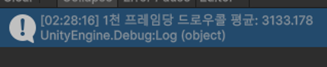
최적화 후
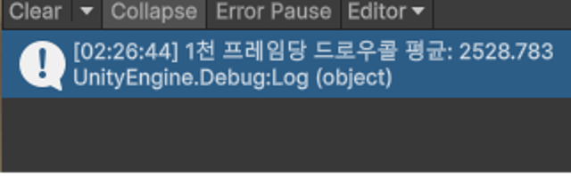
던전이 폐쇄적인 구조이기에 시야도 폐쇄적이라 극적인 배치 감소는 없었지만, 평균적으로 감소한 모습을 보임
던전의 통로가 길게 뚫려서 렌더링 할 오브젝트가 많아지는 경우, 극적인 배치 수 감소를 함.
- Dirty Flag
- 플레이어의 시야 거리 이내에 있는 청크만 로드되어 활성화 될 수 있도록 Dirty Flag적용
=> 드로우콜 및 활성화 오브젝트 수 관리로 최적화 효과 기대
- 모든 청크는 청크 좌표기준으로 딕셔너리를 통해 관리되며, 청크를 순회하는 방식으로, 일정 거리 이내의 청크를 탐색하여 활성화
- Dirty Flag 최적화
최적화 전
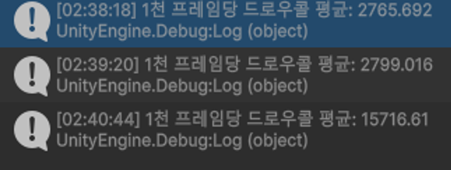
최적화 후
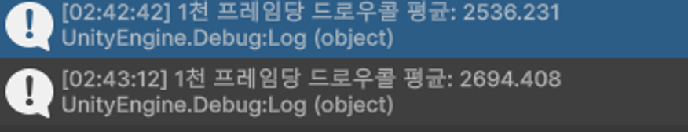
최적화 전에는 지속적으로 활성화된 청크들이 생성되며, 시간이 지날수록 높은 드로우콜을 보여줌
또한, 각종 오브젝트도 활성화 상태로 유지되어. 복합적인 이유(스크립트 등)에 의한 프레임 드랍이 발생
최적화 후에는 거리에 따라 청크들이 관리되며, 안정적인 드로우콜과 FPS를 보여줌
- Object Pooling
- 방을 구성하는 메쉬 생성 시, 발생하는 지연을 줄이기 위한 기법으로 사용
- 추후, 기술된 Object Pooling에 프레임 분산이 적용되어, 메쉬 생성 및 생성 후 발생하는 지연을 최소화
최적화 전/후 비교는 오브젝트 풀링 최적화 부분을 참고
- 모든 과정을 거친 결과물 (플레이어의 이동속도를 고려해 2배속 적용)
구현 성과
- 4방향의 이웃된 청크들과의 터널을 뚫기 때문에, 모든 청크들과 이어질 수 있도록 구현하여 폐쇄 청크가 생기는 것을 방지
- 메쉬컴바인을 통한 단일 드로우콜이 발생하도록 하여 렌더링 최적화
- Dirty Flag를 통해 오브젝트를 관리하여, 활성화된 오브젝트에 대한 드로우콜만 발생하도록 하여 렌더링 최적화
- Object Pooling을 통해, 메쉬 생성시 발생하는 리소스 부담 최소화
Dynamic NavMesh (UnityTask, NavData 수동 수집)
기능 기획 배경
기존 유니티 기능 중, NavMesh를 청크맵 관리에 유연하게 NavData가 업데이트 될 수 있는 솔루션 필요
기존의 UpdateNavMesh를 한 프레임에 그대로 적용하기에는 NavData 업데이트에서 많은 로직을 수행하는 것을 확인
UpdateNavMesh의 내부 로직을 살펴보던 중, UpdateNavMeshDataAsync에 의해 비동기적인 업데이트 처리를 하는 것을 확인
또한, UpdateNavMesh의 로직에서 소스의 마크업을 수집하는 로직이 하이라키를 전체 순회하는 방식이라 비효율적이므로 최적화 필요
구현 방식
- UpdateNavMesh의 내부 로직을 분해한 구성 요소들을 UniTask를 활용하여 UpdateMapRoutine를 제작
- UniTask를 적용한 메서드 구조 예시
<aside>
🛠
- NavSurface 수집
== UniTask.Yield (프레임 분산) ==
- Surface 세팅값 수집
== UniTask.Yield (프레임 분산) ==
- 마크업 수집
== UniTask.Yield (프레임 분산) ==
- 소스 수집
== UniTask.Yield (프레임 분산) ==
- NavData업데이트
</aside>
위와 같은 단계별 로직 수행 간, UniTask를 이용하여 프레임 분산을 적용,
- 코루틴 대신 UniTask를 사용한 이유?
코루틴과 달리 UniTask는 GC 할당이 없기에, 빈번하게 일어나는 NavData 업데이트에도 프레임 드랍을 최대한 막을 수 있기에 성능상 이점이 있었음
- 해당 루틴에서 마크업을 수집하는 기존 방식을 대체
- 기존 유니티의 NavMeshData의 마크업 수집과정은 전체 하이라키를 순회하며 NavModifier을 가져오는 방식
- 현재 프로젝트 조건으로 청크맵을 통해 NavModifier의 범위가 확정되었기에, 다음의 방식처럼 구현
- 청크 생성 시, 청크 내 모든 NavModifier를 미리 수집하여 리스트로 저장
- 마크업 수집 과정에서 로드된 청크의 저장한 리스트를 불러오도록 구현
- 모든 과정을 거친 결과물 (프레임 당)
최적화 전
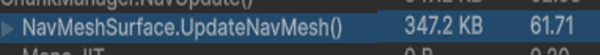
최적화 후
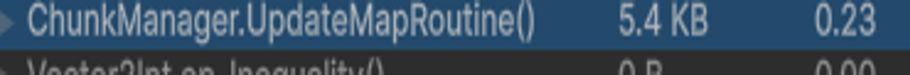
구현 성과
- 사전에 Nav마크업을 미리 수집하는 과정을 통해, 로직을 최적화 할 수 있었음
- UniTask를 통한 프레임 분산을 적용하여, 특정 프레임에서 게임 딜레이가 일어나는 것을 방지할 수 있었음
오브젝트 풀링 + 프레임 분산기법
기능 기획 배경
Component로 분류될 수 있는 모든 클래스는 미리 오브젝트를 생성해두어 관리하는 방식이 필요
다만, 기존 오브젝트 풀링을 그대로 적용하는 경우, 풀 내에 오브젝트가 부족한 시점에 오브젝트를 생성하는 로직으로 구현됨.
해당 방식은 대량의 오브젝트가 갑자기 필요한 상황일 때, 특정 프레임에서 오브젝트 생성이 병목되는 현상이 발생하므로, 이를 보완할 로직이 필요
매 프레임마다, 오브젝트를 하나씩 생성해서 풀의 사이즈까지 채우는 방식을 고려
특정 간격의 주기마다 대량의 오브젝트를 필요로 하는 로직이 많기에 효과적이라고 판단 구현 (Ex. Chunk생성 시, 대량 오브젝트 생성, 적 및 NPC 생성)
구현 방식
- 오브젝트 풀 내에 Coroutine을 통한 프레임 단위 오브젝트 생성
- 코루틴을 통해, 프레임마다 풀사이즈와 실제 가진 오브젝트 수를 비교
- 실제 가진 오브젝트가 부족할 때마다, 프레임 당 하나의 오브젝트를 생성하여 풀을 채울 수 있도록 구현
- 모든 과정을 거친 결과물
최적화 전 (Chunk 생성)
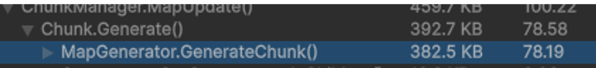
최적화 후 (Chunk 생성)
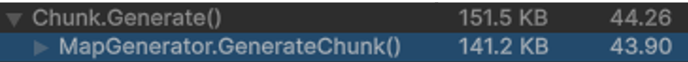
구현 성과
- 기존의 오브젝트 풀링의 확장을 통해, 일정 간격마다 대량의 오브젝트를 생성에 대한 최적화
BT, 상태패턴을 사용한 게임 개체 별 패턴 구현
기능 기획 배경
플레이어:
- 플레이어는 단순한 상태 (Idle, Walk, Run, Attack 등의 행동 구현
플레이어의 상태가 변화하는 조건
- 해당되는 상태에 대응되는 키를 입력받았을 때
- 각 상태의 로직이 끝났을 때
이처럼 간단한 전이 조건 및 상태만 존재하면 상태패턴으로 구현하여, 각 상태를 관리하는 것이 유지보수에 유리하다고 판단
적
- 적은 복잡한 조건 및 상태 (Patrol, Attack, KnockBack 등)의 행동 구현
적의 상태가 변화하는 조건
- 플레이어와의 거리가 일정 사거리 이내일 경우
- 플레이어와의 거리가 공격 사거리 이내일 경우
- 피격을 당한 경우
이처럼 복잡한 전이 조건과 많은 상태가 존재하는 경우에는 Behaviour Tree를 통해, 로직을 시각적으로 확인하며 관리하는 것이 유지보수에 유리하다고 판단
구현 방식
- 플레이어: 상태 패턴
- 각 상태를 관리할 상태머신을 통해, 플레이어의 각 상태를 컨트롤할 수 있도록 구현
- 각 상태를 상태머신에 등록한 뒤, ChangeState 메서드를 통해 각 상태 전환을 담당
- 각 상태는 Idle, Walk&Run, SwapWeapon, Attack, Skill 등으로 분류되며 다음과 같은 전이 조건들을 가짐
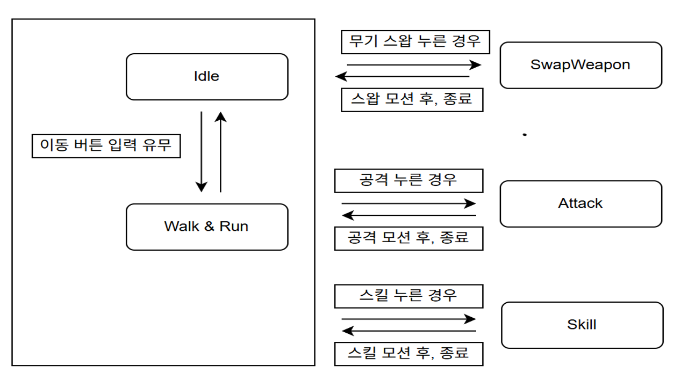
- 각 상태의 전이조건은 플레이어의 키입력, 각 상태의 로직 처리가 끝난 시점으로 대부분 결정됨
- 적: Behaviour Tree를 이용한 패턴 관리
- Behaviour Tree에 각 패턴에 따른 노드 트리를 구성하여 행동을 제어할 수 있도록 구현
- 일부 CustomPatrol, PathFind, Animator 동기화 같은 기능을 제공하는 커스텀 액션을 생성하고, 적의 순찰 경로를 관리하거나 애니메이션과 연동하는 로직을 생성
- 각 상태는 Idle, Patrol, Chase, Attack, KnockBack, Die로 분류되며 다음과 같은 전이 조건을 가짐.
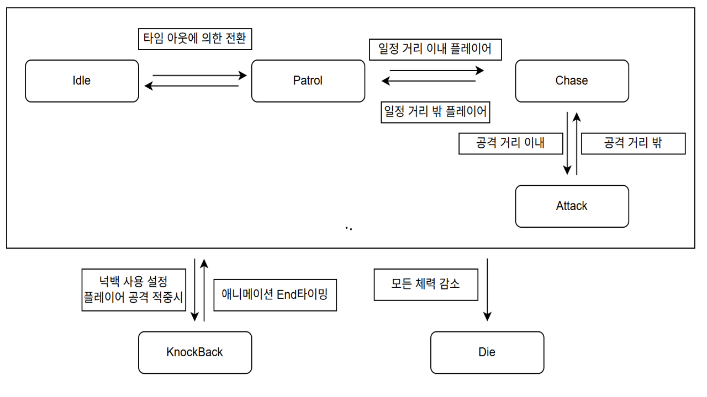
- 상태 패턴과 다르게, 타임아웃, 타겟과 거리, 공격 사거리, 피격 여부, 체력 감소 등 다양한 전이 조건에 따라 상태가 바뀌는 것을 확인
- BT의 시퀀스 및 리프 노드들을 이용하여 각 상태에 따른 트리를 구성하여 통제하므로, 조건 및 상태별 흐름 파악에 유리
아래는 BT 상태별 흐름 예시
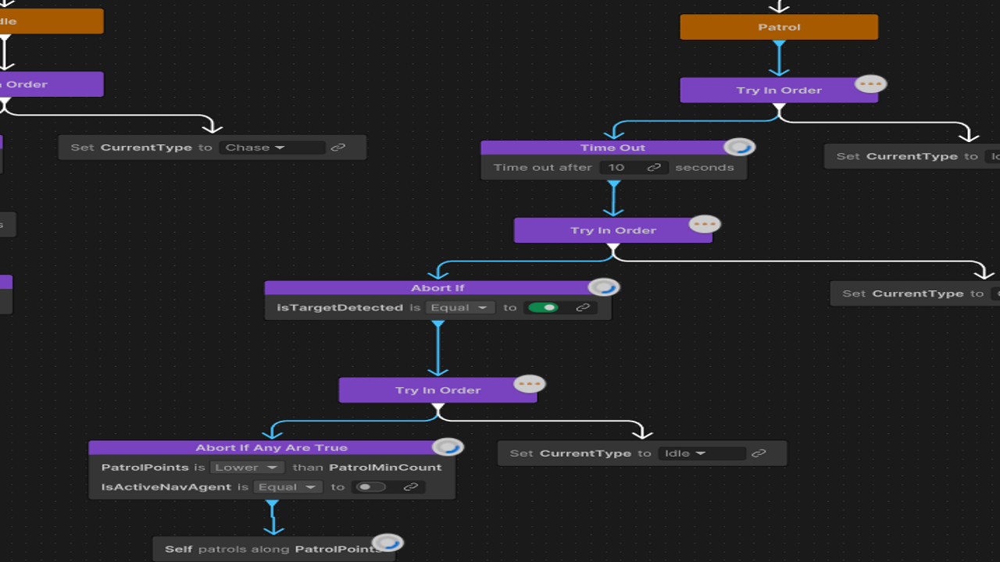
구현 성과
- 상태패턴과 BT의 사용 조건을 분석하여 알맞은 조건인 경우에만 사용하여 유지보수 유리하도록 함